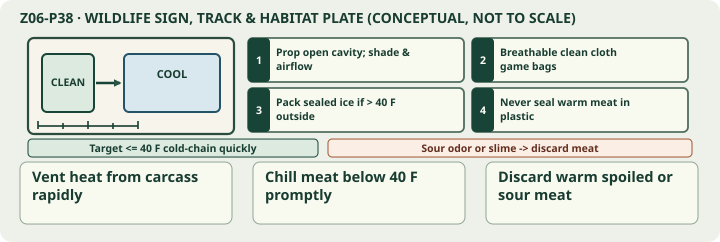

Z06-P38 · Hunting and fishing · New manuscript
Rapid Carcass Cooling Below 40 F and Warm-Weather Spoilage
Cool legally harvested game meat rapidly below 40 F and recognize time-temperature spoilage limits during warm autumn weather.
When it applies · Post-harvest transport and field storage of venison, small game, and poultry.
Equipment · Breathable clean game bags, food-grade ice/cooler, calibrated probe thermometer.

Actions
- Dissipate body heat promptly after lawful field dressing by propping open the cavity, elevating in shade with airflow, or packing sealed clean ice bags around wrapped quarters during warm weather.[H17, F01]
- Protect cooling meat from flies, dust, and scavengers inside breathable clean cotton game bags—never seal hot meat inside airtight plastic bags that trap heat and accelerate souring.[H17]
- Cool meat to 40 F or below as rapidly as possible and discard any game meat held warm in the bacterial danger zone or showing sour odor, slimy sheen, or greenish discoloration.[H17, F01]
Failure recognition · Hauling an uncooled carcass in a closed warm vehicle trunk or sealed plastic tarp causes rapid bone-sour bacterial spoilage.[H17, F01]
Verify · Meat is shaded, ventilated, kept clean of flies, and cooled promptly below 40 F with ice or refrigeration.[H17, F01]
Stop or change course · Stop and discard meat that smells sour, feels slimy, or sat uncooled in warm ambient temperatures beyond safe food-safety limits.[H17, F01]
Evidence and editorial notes
- F01 · USDA / FDA / CDC · Four Steps to Food Safety (current web edition)
- Section: Clean and Separate · Conditions: Food preparation with safe water and surfaces
Support: Wash hands and separate raw animal foods and juices from ready-to-eat food.
Limitations: Requires safe water or approved hand hygiene substitutes in outages. · Conflicting evidence: None; retained for food safety pack completeness.
Editorial note: Maintains five-pack integrity. · Specialist reviewer: Food safety and public health
Primary source · checked 2026-11-24 - H17 · Minnesota DNR · White-Tailed Deer Hunting and Management in Minnesota (Current web edition)
- Section: Big-game seasonal ecology and field-hygiene cooling · Conditions: White-tailed deer habitat, rut/winter yarding, and meat spoilage limits
Support: Rapid cooling below 40 F, keeping carcasses clean of gut contents and dirt, and protecting meat from insects prevent bacterial spoilage.
Limitations: Warm autumn weather accelerates spoilage within hours; abandon harvest if safe transport and cooling cannot be achieved. · Conflicting evidence: None noted.
Editorial note: Connects Z06 harvest to cold-chain food safety. · Specialist reviewer: Wildlife manager and food-safety specialist
Primary source · checked 2026-11-25
Source lineage · New manuscript (Z06 P17 food spoilage) · Classification · New manuscript.